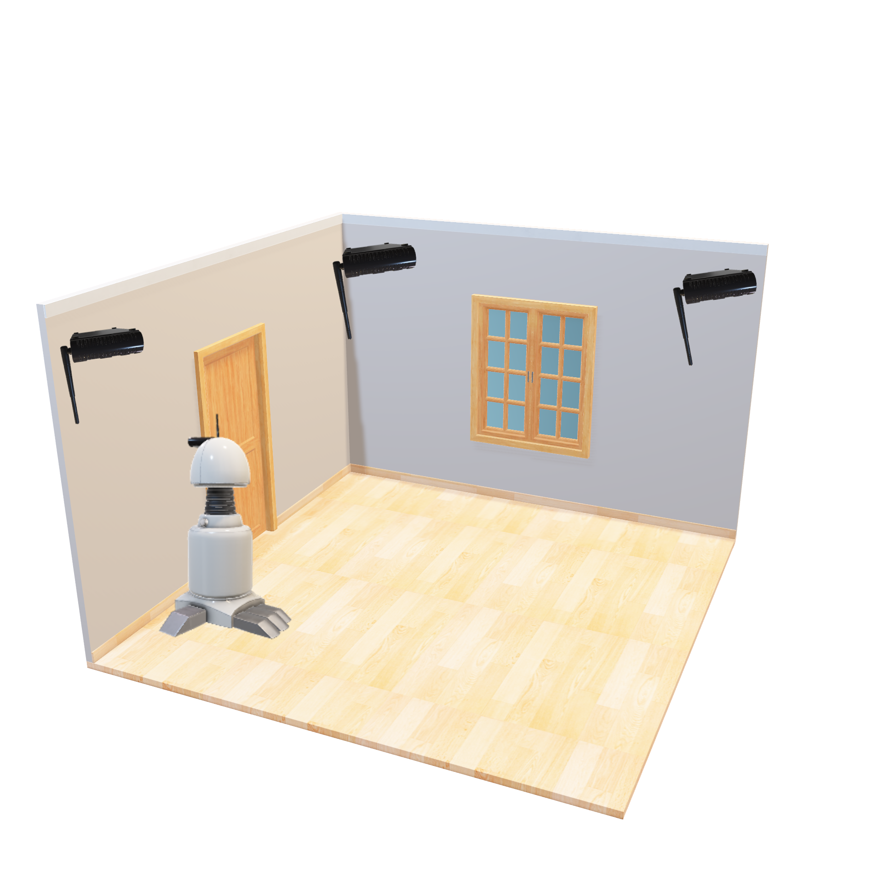
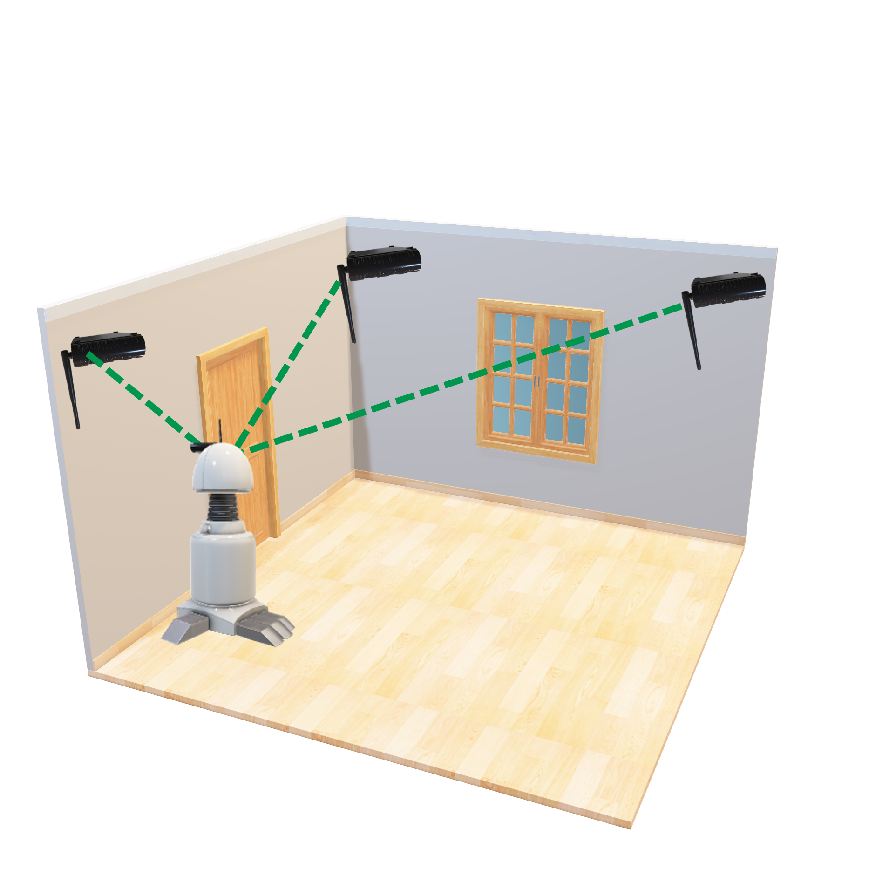

Indoor Localization Simulation with OMNeT++
Developed a simulation to model an indoor localization network application. Parameters such as energy consumption and timers were matched to real-world implementations. The system was developed using OMNeT++ as the simulation IDE, with code written in C++ and the .NED network description language.
Keywords: OMNeT++, Wake-Up Receiver, C++, Energy Consumption, RSSI, Indoor Localization.